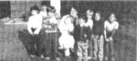

If you now operate, or have ever operated, a successful home business that was inspired by an article you read in MOTHER, tell us about it in around 500 words (write to THE Mother Earth News (restricted) , P.O. Box 70, Hendersonville, North Carolina 28791): Be we to mention when and where you started your venture and with how much "seed money", what you make (net), and anything else that might be of assistance to other entrepreneurs. If your story is used in this column, you'll receive [I] the satisfaction of knowing that you may help someone else start a business and [2] a free two-year new or renewal subscription to THE MOTHER EARTH NEWS (restricted) .
I have a bootstrap business that I can "pick up" anytime I need it ... by simply picking up a tack hammer and staple gun that I've already paid for.
My enterprise was born, many years ago, when my father asked my sister and me to reupholster a couple of old sofas. Well, we balked at the idea, but he said, "If you put your mind to it, you can do anything anyone else can do, and being female has nothing to do with it!" To make a long story short, we did refinish the two couches, and they both turned out great!
That began my upholstering career, and-as I said-I'm still at it (when I need to be) some 20 years later. And, though Dad inspired me to start the business, MOM has kept me going! Such pieces as "It Pays to Be an Old Sew-and-Sew" (No. 48, page 64) and Maria Bachman's letter describing her stitchery service (issue 69, page 154) have really helped to reaffirm my faith in the power of this particular individual to take care of herself and provide extras for her family . . . without having to hold down a "regular" job.
For example, my son recently needed surgery at a hospital nearly 200 miles from home. So during my stay in that town, while he was hospitalized, I bought an old sofa for $45, reupholstered it, and sold it for $500. That certainly helped us get the budget back in balance!
I can find the sort of work I do almost anytime, and-since my customers, as a rule, supply both furniture and fabric-the cost of the tools I mentioned has been my only investment: one tack hammer, 25 cents (at a flea market) . . . and one electric stapler, $19.95. Armed with that equipment, my dad's advice, and MOTHER'S wisdom, I guess I was bound to succeed.
Jan Worley
Murphy, N.C.
My story really began back in 1979 with the arrival of a bundle of assorted issues of THE Mother Earth News (restricted) sent by an old American friend. My husband Brian and I had long been interested in growing herbs and "old time" cottage garden perennials, but "Start a Home Business With Herbs!" (issue 56, page 56) gave us enough confidence to actually set up a similar enterprise of our own. We began selling both plants and seeds (collected from our older established herbs) and soon had built a small but steady income . . . which we used to buy seeds of rarer varieties of herbs and wildflowers.
At this point our whole business venture changed directions, though. Several of MOM'S articles on wild foods really caught our interest, and-since many of the plants described in them were unobtainable in our neck of the woods-we started tracking down seed companies that sold the North American wildlings.
Soon we had such a demand for the seed-started "new" plants that we were unable to satisfy all the requests, and decided to try another approach. We bought a secondhand photocopier (it set us back $350), paper, and a filing system ($120) and started producing a small booklet listing all of our plant sources. We offered the little catalog for sale to those who inquired about the plants.
Then we began scouting out sources for Australia's own edible and useful flora. Gradually we became involved in the business of indexing mail order suppliers of edible, useful, and exotic herbs, shrubs, and trees from all over the world . . . and publishing that information in a series of directories for both local and foreign customers.
Although we definitely haven't abandoned the plant business, we're now also a thriving information service, answering all kinds of inquiries about Australia itself: questions about land, jobs, houses, rural and alternative communities, courses, workshops, magazines, books, holidays, and more. We're earning about $120 per week of part-time work now, and expect to turn a tidy profit this year, though we always try to keep our prices low.
You can obtain details concerning all of our available directories and services for $2.00, refundable with your first order.
Margaret & Brian Holland
Holco Information Services
Dept. TMEN
20 Stephens Rd.
Queanbeyan, N.S.W. 2620
Australia
Babies are my bootstrap business! Two years ago I came face to face with the fact that our one-income family was really taking a beating from double-digit inflation. Every month-despite our savings plan, vegetable garden, and coupon clipping-we faced a negative cash balance. We felt that we were in a last-resort situation . . . and that I'd have to go to work. The idea of leaving my two children (both less than five years old) with strangers and of facing a working world I had not been a part of for over four years frightened me, but we seemed to have no choice.
Then, when I began to evaluate my marketability, things looked gloomier still: My education consisted of two meager years of college and no technical training ... I had no office skills other than a little personal-use typing . . . and my employment history was limited to waitress and nurse's aide work. Hot oatmeal cookies, a long history of magically repairing broken dolls, and a soothing way with banged-up knees were not impressive job credentials. I found myself labeled "unskilled" in a highly specialized society.
On top of that, I had to face the frustrating scarcity of day-care centers and the outrageous fees and long waiting lists at nursery schools . . . and I hadn't even begun to figure out the expense of commuting and of buying a "career" wardrobe. My paycheck would likely be pretty much swallowed up by the added outlay, even if I could find an employer who'd take a chance on me!
But wait! I had once read an article, in MOTHER, about a woman who operated a business while caring for her own tots ("Mother Types at Home", issue 54, page 80). And I suddenly realized that I could provide a salable service from my house. After all, I'm fairly calm in the face of child-induced chaos, I love to read stories aloud, and I wield a mean crayon! Furthermore, I wanted to stay with my kids . . . and I knew there must be other parents as discouraged about finding good, reasonably priced child-care facilities as I'd been.
The rules and regulations for starting such an enterprise didn't prove to be too imposing, either. I was required to plug all of my home's electrical outlets, install childproof latches, and obtain a letter from our doctor certifying the health of the whole family. Then the fire marshall came to inspect our woodstove and chimney . . . and I was in business.
A single classified ad soon brought me all the children I could handle, and quite a sizable waiting list to boot. My fee is $1.25 an hour per child, which includes lunch and a snack. (The prices for extras-such as breakfast or birthday parties-are negotiated separately.) Operating costs for my home-based business are limited to food (about $20 a week) and taxes and insurance ($30 a week).
Now, I'm able to raise my own preschoolers myself, and provide them with a wide variety of new playmates. Best of all, though, I've found that there's a real need for what I'm good at ... and that, by doing it, I can bring in a paycheck of about $190 a week.
Marcia Beebe
Mystic, Conn.
|
 |
|
|